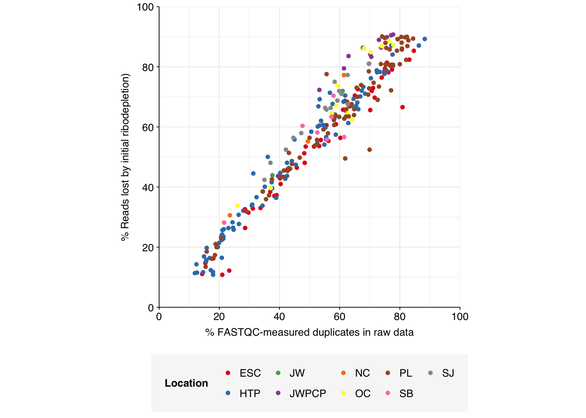

In my last entry, I analyzed the unenriched samples from Rothman et al. 2021. In this entry, I extend that analysis to the 266 samples that underwent panel enrichment using the Illumina respiratory virus panel prior to sequencing. (These were otherwise processed identially to the unenriched samples described in my last entry.)
The raw data
The Rothman panel-enriched samples totaled roughly 5.4B read pairs (1.1 terabases of sequence). The number of reads per sample varied from 1.3M to 23.5M, with an average of 6.8M reads per sample. The number of reads per treatment plant varied from 0.8M to 89M, with an average of 20M. The great majority of reads came from three treatment plant locations: ESC, HTP, and PL. Duplication and adapter levels were similar to the unenriched samples, which a median FASTQC-measured duplication level of 57%. Read qualities were high, albeit with a dropoff towards the end of longer reads; the large mid-read drop seen in some unenriched samples was not observed here.
Deduplication and conservative ribodepletion together removed about 57% of total reads on average, similar to unenriched samples. Secondary ribodepletion removing a further 4% on average. However, as before, these summary figures conceal significant inter-sample variation, with samples that showed a higher initial level of duplication also showing greater read losses during preprocessing.
# Plot read losses vs initial duplication levelsg_loss_dup<-n_reads_rel%>%mutate(percent_duplicates_raw =percent_duplicates[1])%>%filter(stage=="ribo_initial")%>%ggplot(aes(x=percent_duplicates_raw, y=p_reads_lost_abs, color=location))+geom_point(shape =16)+scale_color_brewer(palette="Set1", name="Location")+scale_y_continuous("% Reads lost by initial ribodepletion)", expand=c(0,0), labels =function(x)x*100, breaks =seq(0,1,0.2), limits =c(0,1))+scale_x_continuous("% FASTQC-measured duplicates in raw data", expand=c(0,0), breaks =seq(0,100,20), limits=c(0,100))+theme_base+theme(aspect.ratio =1)g_loss_dup

Data cleaning with FASTP was very successful at removing adapters, with no adapter sequences found by FASTQC at any stage after the raw data. Preprocessing successfully removed the terminal decline in quality seen in many samples.
Deduplication and ribodepletion were collectively quite effective at reducing measured duplicate levels, with the average detected duplication level after both processes reduced to roughly 11%. Note that the pipeline still doesn’t have a reverse-complement-sensitive deduplication pipeline, so only same-orientation duplicates have been removed.
As before, to assess the high-level composition of the reads, I ran the ribodepleted files through Kraken (using the Standard 16 database) and summarized the results with Bracken. Combining these results with the read counts above gives us a breakdown of the inferred composition of the samples:
# Plot composition of minor componentsread_comp_minor<-read_comp_mrg%>%filter(classification%in%c("Archaeal", "Viral", "Human", "Other"))palette_minor<-brewer.pal(9, "Set1")[6:9]g_comp_minor<-ggplot(read_comp_minor, aes(x=enrichment, y=p_reads, fill=classification))+geom_col(position ="stack")+scale_y_continuous(name ="% Reads", breaks =seq(0,0.1,0.01), expand =c(0,0), labels =function(x)x*100)+scale_fill_manual(values=palette_minor, name ="Classification")+facet_wrap(.~location, scales="free")+theme_kitg_comp_minor
The average fraction of low-quality, duplicate, and unassigned reads is slightly higher in enriched vs unenriched samples (mean 80% vs 75%), while the average fraction of ribosomal reads is lower (10% vs 15%). The fraction of bacterial reads is similar (7% vs 5%), while the overall fraction of viral reads is actually slightly lower (2% vs 5%). This latter finding is perhaps surprising, given that the enriched samples are enriched for a group of viruses; I suspect the observed results are due to non-human viruses (especially tobamoviruses) dominating human viruses in the overall counts.
Human-infecting virus reads
Now we come to the main result of interest: the fraction of human-infecting virus reads in enriched vs unenriched samples.
Following the same selection criteria used for the unenriched samples, we identify 177,246 HV reads across the panel-enriched samples, compared to 12,305 in the unenriched samples. This corresponds to an overall relative HV abundance estimate of \(3.3 \times 10^{-5}\) - about double the estimate for unenriched samples of \(1.87 \times 10^{-5}\). This is much lower than the HV relative abundance observed in Crits-Christoph’s enriched samples, which exceeded \(10^{-2}\).
Panel-enriched relative abundance for individual treatment plants varied from \(9.3 \times 10^{-6}\) to \(1.6 \times 10^{-4}\), with enrichment factors compared to unenriched samples from the same plant ranging from \(1\times\) (HTP) to \(12\times\) (ESC). Overall, this seems like a relatively disappointing showing for panel-enrichment compared to some other datasets we’ve seen.
Digging into specific viruses, the results are…odd. While the list of most highly enriched viruses encludes some included in the Illumina panel (e.g. SARS-CoVs, betapolyomaviruses), many are fecal-oral viruses with no obvious relationship to the panel (e.g. various astroviruses). The most highly enriched viral genus is Lentivirus, which includes HIV and is not included in the Illumina panel. I don’t know enough about the panel or these respective viruses to give a strong take on what’s going on here, but it certainly seems that the Illumina RVP is less effective at enriching for specific respiratory viruses in Rothman than in Crits-Christoph.
Code
viral_taxa_path<-file.path(data_dir_old, "viral-taxa.tsv.gz")viral_taxa<-read_tsv(viral_taxa_path, show_col_types =FALSE)# Get viral taxon names for putative HV readsmrg_named<-mrg%>%left_join(viral_taxa, by="taxid")# Discover viral species & genera for HV readsraise_rank<-function(read_db, taxid_db, out_rank="species", verbose=FALSE){# Get higher ranks than search rankranks<-c("subspecies", "species", "subgenus", "genus", "subfamily", "family", "suborder", "order", "class", "subphylum", "phylum", "kingdom", "superkingdom")rank_match<-which.max(ranks==out_rank)high_ranks<-ranks[rank_match:length(ranks)]# Merge read DB and taxid DBreads<-read_db%>%select(-parent_taxid, -rank, -name)%>%left_join(taxid_db, by="taxid")# Extract sequences that are already at appropriate rankreads_rank<-filter(reads, rank==out_rank)# Drop sequences at a higher rank and return unclassified sequencesreads_norank<-reads%>%filter(rank!=out_rank, !rank%in%high_ranks, !is.na(taxid))while(nrow(reads_norank)>0){# As long as there are unclassified sequences...# Promote read taxids and re-merge with taxid DB, then re-classify and filterreads_remaining<-reads_norank%>%mutate(taxid =parent_taxid)%>%select(-parent_taxid, -rank, -name)%>%left_join(taxid_db, by="taxid")reads_rank<-reads_remaining%>%filter(rank==out_rank)%>%bind_rows(reads_rank)reads_norank<-reads_remaining%>%filter(rank!=out_rank, !rank%in%high_ranks, !is.na(taxid))}# Finally, extract and append reads that were excluded during the processreads_dropped<-reads%>%filter(!seq_id%in%reads_rank$seq_id)reads_out<-reads_rank%>%bind_rows(reads_dropped)%>%select(-parent_taxid, -rank, -name)%>%left_join(taxid_db, by="taxid")return(reads_out)}hv_reads_species<-raise_rank(mrg_named, viral_taxa, "species")hv_reads_genera<-raise_rank(mrg_named, viral_taxa, "genus")# Count relative abundance for specieshv_species_counts_raw<-hv_reads_species%>%group_by(location, enrichment, name)%>%count(name="n_reads_hv")%>%inner_join(read_counts_agg%>%select(location, enrichment, n_reads_raw), by=c("location", "enrichment"))hv_species_counts_all<-hv_species_counts_raw%>%group_by(name, enrichment)%>%summarize(n_reads_hv =sum(n_reads_hv), n_reads_raw =sum(n_reads_raw), .groups ="drop")%>%mutate(location ="All locations")hv_species_counts_agg<-bind_rows(hv_species_counts_raw, hv_species_counts_all)%>%mutate(p_reads_hv =n_reads_hv/n_reads_raw)# Count relative abundance for generahv_genera_counts_raw<-hv_reads_genera%>%group_by(location, enrichment, name)%>%count(name="n_reads_hv")%>%inner_join(read_counts_agg%>%select(location, enrichment, n_reads_raw), by=c("location", "enrichment"))hv_genera_counts_all<-hv_genera_counts_raw%>%group_by(name, enrichment)%>%summarize(n_reads_hv =sum(n_reads_hv), n_reads_raw =sum(n_reads_raw), .groups ="drop")%>%mutate(location ="All locations")hv_genera_counts_agg<-bind_rows(hv_genera_counts_raw, hv_genera_counts_all)%>%mutate(p_reads_hv =n_reads_hv/n_reads_raw)